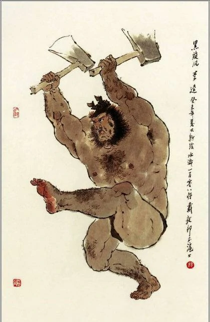

李逵问题
这是博客的第一篇有实质内容的文章（其实也只是拾人牙慧的空泛之谈），历史学本科生的学术储备、眼界均不足以形成一个完整自洽的逻辑体系来阐述自己的想法。
这周是期末周，在海积如山的ddl面前，自己又忙里偷闲走马观花般看了些许推理小说。忽地又萌生出几年前卒读《独眼少女》后的想法————“后期奎因问题”是否能挪用于历史研究中呢？基于这几年产出的作业垃圾和囫囵吞枣的闲书，仿佛已是文思泉涌了。百般无赖之下，在下一篇读书报告ddl的十个小时之前，各取历史研究与奎因首字，姑且称作“李逵问题”罢。
后期奎因问题
这并不是学术史回顾，只是撰写这几年写读书报告后落下的积习，跟闻铃垂涎的黄犬也无甚差别，取学术史回顾之名，不过是附庸所谓学术罢了。
后期李逵问题
后期奎因问题主要包含下面两个方面，也就是“侦探和案件”的关系
1. 故事中侦探最终提出的解决方案，无法在故事中被证明是真正的解决方案。
2. 侦探在故事中扮演上帝的角色，决定人物的命运，这种做法是否合适。
由此延伸，也就有了其在历史研究中的对应。我们先统称历史研究的对象（事件、概念或者每个具体实在）为史料群，姑且用这个集合指涉推理小说中的故事（更准确一点，是案件）。在推理小说中，侦探是参与、调查并破解故事的角色，不难将其对应到历史研究的主体，也就是历史研究者。由此，就有了两个新的关系。
1. 研究者对史料群最终提出的解决方案（某个事件的真相、某个概念的辨析或者某种关系的构成），无法在史料群中被证明是真正的解决方案。
2. 研究者在史料群中扮演上帝的角色，决定史料群的命运，这种做法是否合适。
这种生搬硬套确实有点别扭，针对第一条，所谓“解决方案”其实更偏向于研究者是否完成了其学术目标，用论文那套框架而言就是是否解决了前言中提及的所谓“本文想解决的问题”；而第二条“决定史料群的命运 ”则是指研究者可以自行选择史料群是否呈现以及呈现的形式与程度。这对应到推理小说就是，侦探基本上就是全知全能的，他可以得知所有的线索（不论真假与否），并通过对线索去伪存真解答案件，而后期奎因问题关注的一大重心就是，侦探怎么能保证线索的真伪呢？读者从有限的信息中无法判断，只能听凭侦探的一面之词。说到这，一些与档案馆、图书馆、方志办或者文物贩子、闲鱼代抄一档档案的“学长”的人或许已经想到了，这不说的就是研究者自行判断史料真伪并选择性地呈现，而读者又没有能力去接触史料吗。 这种对应也有错漏。若像前文所述，推理小说中的线索对应的是史料，那这个生造出来的史料群又是什么东西？案件是一个时间尺度上发生的事情，线索、人和时间共同构成了发展的案件，从这个角度而言，史料群就是研究者所呈现史料的集合，其对应到案件里，应该是侦探对线索的汇总，放扩到整个案件本身好像确实不妥。暂且搁置这个问题，有后期李逵，自然也有前期李逵。何谓前期，自然指的是史料产生的原初阶段。在推理小说中，留下线索（不论是有意为之还是无意识的）的是凶手（忽略那些侦探为了迷惑凶手自行制造线索的maka行为，此处特指麦卡托）。为方便书写，我们假设史料都是一手的，留下史料（见证某一事件并留下记录、创造某个抽象概念或者具体实在）的人我们就称之为史料生产者了，这样又有了两个新的关系：
1. 史料生产者生产的史料，无法在史料中被证明是真实的。
2. 史料生产者在史料中扮演上帝的角色，决定史料的命运，这种做法是否合适。
为了尽量贴合后期奎因的原意，第一条相当拗口。简而言之，就是史料无法通过自身证明它是真实的。放到推理小说中来说，就是凶手留下的线索都是侦探来判断是否真实，没有一个权威、公平的方式来证伪线索本身。举历史研究的例子，罗尔纲先生有关太平天国史料的辨伪中，一则被证明为伪的史料是英军缴获的李世贤的密札，罗尔纲先生认为这其实是英军对太平军的污蔑。虽然记忆有点模糊，但依稀记得证伪的方式是因为密札中的一些词汇以及现象与真实的太平军不符。不过这不重要，我们已经知道了证伪的方式，因为有关于太平军的真实形象，这种铁律、真线索的存在，所以与之不符的密札也就沦为假线索假史料了。读到这里，读者应该也发现了，史料的证伪，只能通过外部比较，这比侦探判断线索似乎还要困难。因为史料本身可不存在诸如活体反应、焰色反应的物理规律，更不存在像鲁米诺反应这样一测就准的鉴定方法（这是说的是史料真伪，不是对文物的鉴定）； 针对史料的真伪，就有了第二条。凶手制造线索有很多动机，比如真的是无意中遗漏的，或是迷惑侦探、阻碍调查、栽赃陷害等等。与之相对，史料生产者生产史料的动机也值得讨论了。与研究者处理史料群不同，史料生产者可不需要遵循什么学术规范或者有着更高的追求，他们为什么留下史料就很值的推敲了。对于史料而言，史料生产者是真正的全能的上帝。